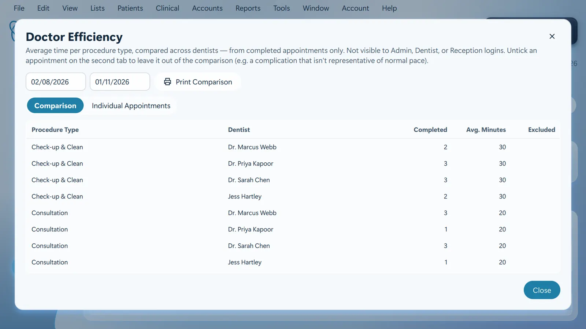
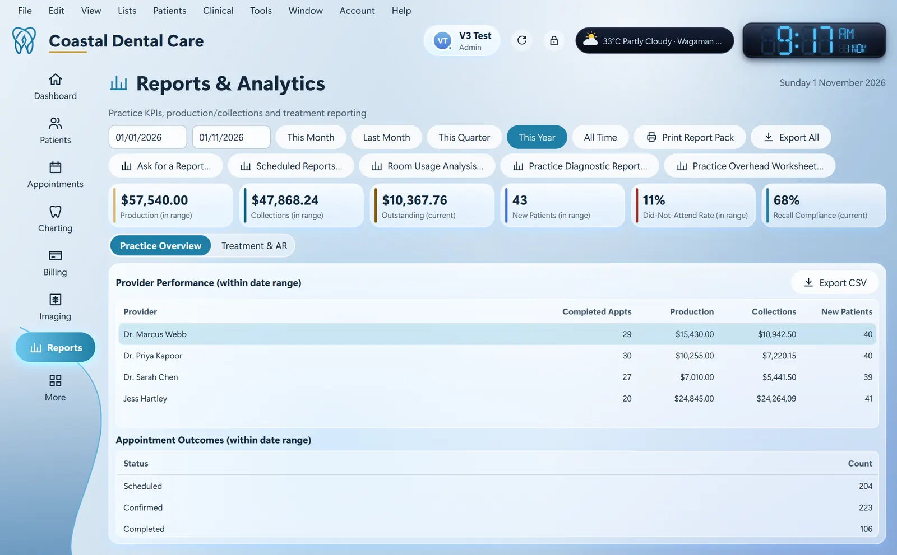

01 / 04 · Reports
Trends over time
Reports → Practice Analytics
See how the practice is trending, month by month.
- Monthly trends in production, collections, new patients, did-not-attend rate and case acceptance, each against the practice's own history.
- The orthodontic Dashboard adds starts, debonds, active and retention patients, failed drafts and overdue instalments.
- Practice Analytics is for the Owner login only.

02 / 04 · Reports
Each orthodontist's numbers
Reports (Owner login)
Owner-only reports on how each orthodontist's chair time is used.
- Average chair time per procedure, against the others and the practice.
- One orthodontist's production, collections, outcomes and hours, in detail.

03 / 04 · Reports
Ask for a report
Reports → Ask for a Report
Ask for a report in plain words, typed or spoken, and DentaCore builds it.
- See how your question was read, correct it and run it again.
- Save the reports you use, and schedule them to arrive on a timetable.
- Export any table to CSV, or print a report pack.

04 / 04 · Reports
Practice profitability
Reports → Practice Profitability
Real profit, not just revenue: production minus the overheads you enter.
- Production, collections and receivables.
- Rent, wages and running costs entered once and reused every time.
- Production per chair-hour for each orthodontist.